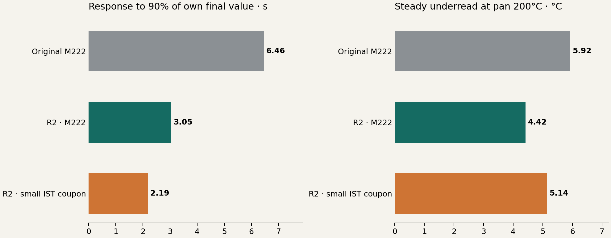

The proposed cartridge roughly halves the modeled response time. Accuracy still depends on controlling heat leakage and proving clean, repeatable contact.
Simulation and test preparation · physical tests NOT RUN
3.05 sR2 M222 response · original 6.46 s
4.42°CR2 underread at 200°C · original 5.92°C
5 CAD states29 valid parts each · no rigid intersections
Candidate for a dry instrumented prototype. The selected seal compound is rated above 250°C, but open witness and lead passages mean this assembly is not spill sealed. The production contact backend remains unavailable. These outputs do not establish safe cooking control.
What improves the thermal response?
Remove the heavy metal skirt. The retained Ø8 × 0.15 mm head, including three hooks, is 72.4 mg. Its modeled heat capacity is 73% below the original cap.
Keep the heavy support thermally separate. Three Ø0.30 × 2 mm zirconia posts sit on a sparse ceramic spider. The model includes the carrier mass, trapped-air path and a radiation budget; short alumina supports erased much of the expected benefit.
Reduce installed wire and support leakage. Four fine copper/PFA leads with controlled slack are specified. A wire-fin model includes cooling along their length. Longer wires alone do not eliminate heat loss.
Make clean contact repeatable. Force comes from the main spring and local flexures in series. Warped pans, debris and low depression can defeat both accuracy and the proposed detector thresholds.
Coupon the smaller RTD after the load path. It improves the step response, but the same lead leakage causes a larger local temperature drop. Keep the existing M222 for the first cartridge.

Assembly
Cap force
90% own final
90% pan step
200°C underread
Original M222
0.250 N
6.46 s
7.98 s
5.92°C
R2 · M222
0.218 N
3.05 s
3.52 s
4.42°C
R2 · small IST coupon
0.218 N
2.19 s
2.60 s
5.14°C
Original is the inherited 0.25 N middle case. R2 uses the contact model's 0.218182 N from 0.60 mm depression, 0.12 N effective preload and 2 N/mm local stiffness. Both assume full contact area, href 1000 W/m²K and pan k 45 W/mK. Step: pan 25→100°C, glass/body 25°C. DC: pan/glass/body 200/80/60°C. These assumed contact and loss properties are not calibrated. Equations, input derivations and limitations.
At equal 0.25 N, R2 M222 gives 2.81 s and 4.11°C underread. Halving the original bond thickness alone changes 6.46 s to only 6.35 s. At weak contact, the new M222 still reaches 7.30 s and 10.02°C underread. At an imposed 2°C/s ramp, it underreads 7.50°C when the pan reaches 200°C; the smaller RTD is almost identical at 7.46°C. Faster step response does not by itself solve control error.
The four unresolved details, developed
250°C seal
Kalrez 6375 is the compound candidate: published maximum 275°C. CAD defines a custom carrier membrane and axial face gasket. Dynamic force, chemical exposure, lifetime and final fluid closure are unqualified. A sealed optical chamber and feedthrough are requirements for a follow-on design; an island barrier must fit the detector force budget.
Contact despite a main-plunger jam
A cap-local flexure is measured against the carrier with two external optical heads. With ≤15 µm error and ≤10 mN parasitic force, simulated main-guide and main-seal jams release correctly. A seized island, trapped rod or credible frozen reading can still report false contact. The raw instrument budget does not yet meet the calibrated target. Fault matrix and measurement requirements.
Positive cap retention
Three welded hooks capture the cap to its ceramic island, independently of the RTD bond. No closed metal skirt or ring is added. Five STEP positions check rest, loaded, compression stop, full travel and upward capture. Welding distortion, hook fatigue, thin-post side loading and clamp construction still require supplier/process work. Mechanical definition.
Bond and lead details
M222 32208550, Resbond 908-1 at a proposed 0.10 mm and four TFCP-003-100 copper/PFA leads form the first coupon stack. Kelvin weld regions, nickel stubs, slack pocket and strain relief are defined. Shared native stubs retain temperature-dependent resistance. Thin-bond cure, dielectric integrity and a formed harness are not verified. Assembly and coupon instructions.
Two optical heads provide one differential measurement. They are bench equipment, not a demonstrated product-fit or redundant detector.
What the induction comparison establishes
The bare Ø8 steel head has approximately 91% less calculated axial-field dissipation than the original skirted cap at the illustrative 40 kHz / 1 mT point. This is a topology comparison, not the field inside the cooker. Bent hooks, flexures, nearby metal, inverter interference and actual pan shielding still need field/bench evidence. The induction snapshot predates the final ceramic spider; cap geometry is identical, and the snapshot must not be mistaken for the complete final assembly. Model limits and induction test preparation.
Verification and the next evidence
23 assembled-model tests, 10 contact tests, 11 bond/lead tests and 16 induction tests pass. All 25 generated CSV files replay byte-for-byte. All five CAD states reimport successfully, with geometry JSON unchanged after replay. These verify the software and modeled geometry, not physical performance.
Prepare the first dry cartridge around M222. Measure force and return, optical drift and induced jams, wire drag, reference-to-RTD error, thermal transients and repeat placement using the existing bench protocol and the R2 additions. Require supplier acceptance of thin-post manufacture, hook welding, foil heat treatment/clamps and bond cure before fabrication release. Seal completion and detector qualification must progress together.